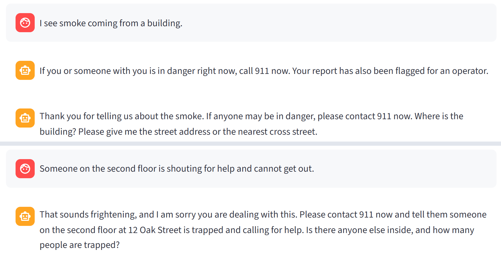
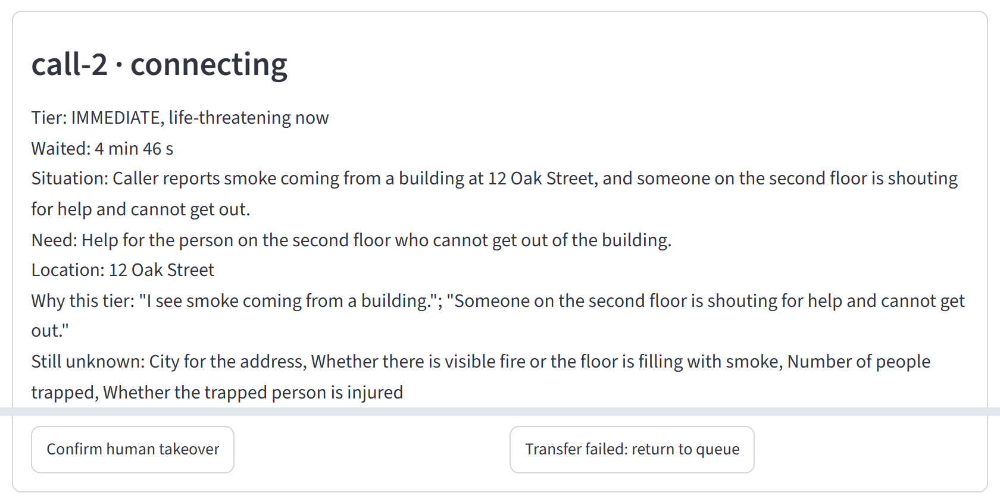
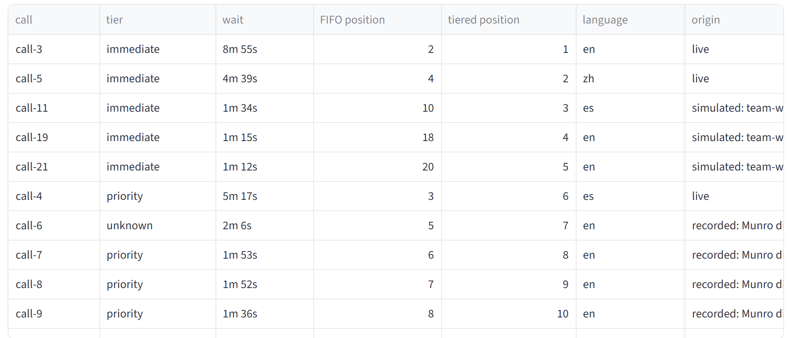
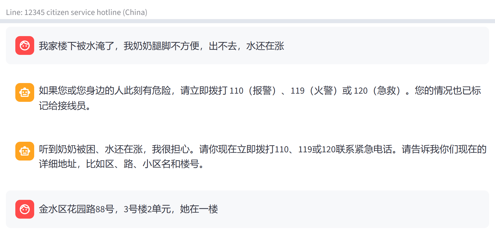

When the fires hit Los Angeles
211 LA, all contacts, 8 Jan 2025 (Eaton and Palisades fires). 211 LA after-action report, App. D.
A first-come queue cannot tell a trapped person from a benefits question. The supervisor asks:
Who needs a person
right now?
How it works running prototype
Waits in line
Typed chat, or an English phone call via Retell. Never hung up on.
Talks with them
Editable playbooks: acknowledge, calm, ask one question, in their language.
Notes the need
Situation, place, danger, with the caller's words as evidence that code checks.
Ranks the queue
Fixed rules set the tier, first come within it. On danger the desk gives the emergency number.
Takes over
Reserve, then confirm. A failed transfer keeps the original arrival time.
The live demo screenshots of the running desk, Sat 17 Oct 2026




Ordinary day
Callers ask about benefits, rent help, food or road status. The assistant notes the need while they hold, nobody loses their place, and the operator starts with a summary.
Crisis, same build
In a fire or flood surge, life threats move up and hear the emergency number at once. Matching reports are grouped as unverified; silent callers are flagged; dropped callers become callback review tasks.
Twist 2: China's 12345 hotline
| Los Angeles 211 | China 12345 | |
|---|---|---|
| Languages | English, Spanish, Mandarin | Mandarin, English |
| In danger | 911 | 110 police · 119 fire and rescue · 120 ambulance |
| Address | number, street, city | district, road, number, compound, building, unit |
| Rules | Identical code: tiers, order, handoff, human decision | |
12345 is China's local government hotline for non-emergency requests; emergencies go to 110, 119, 120 and 122. It surges too: Beijing's 12345 took over 33,000 rain-related calls in 72 hours in July 2023.
Never automated
- Hanging up or calling out
- Dispatch, or promising that help is coming
- Tier, order or handoff decided by the model
- Treating an unclear call as routine
- Completing a transfer without a person
Runs today
- Caller and operator views, saved desk, audit trail
- Claude replies in English, Spanish, Mandarin
- Los Angeles 211 and China 12345 line profiles
- Labeled surge injector
- Retell bridge for English phone calls
Not yet, not measured
- Voice transfer to a person; outbound callback
- Accuracy on real calls; effect on wait times
- Spanish or Chinese phone calls
- A 12345 partner, telephony, hosting, data review